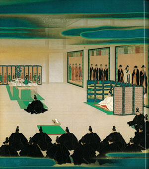

(Keene)An image of the 1st Meiji emperor sitting in his palace at Tokyo helping to write the "Path of Five articles", the principles used to guide the whole of the Meiji era, which translated reads "By this oath, we set up as our aim the establishment of the national wealth on a broad basis and the framing of a constitution and laws:
[1] Deliberative assemblies shall be widely established and all matters decided by open discussion.
[2] All classes, high and low, shall be united in vigorously carrying out the administration of affairs of state.
[3] The common people, no less than the civil and military officials, shall all be allowed to pursue their own calling so that there may be no discontent.
[4] Evil customs of the past shall be broken off and everything based upon the just laws of Nature.
[5] Knowledge shall be sought throughout the world so as to strengthen the foundation of imperial rule."
A trend throughout these principles is a strong feeling of Nationalism or Patriotism. The first principle states that the government and nation should be put above all else. The fifth principle follows a similar vein in that its fundamental purpose is to make the Emperor and by extension the Nation more powerful.